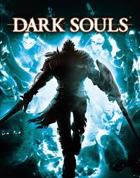
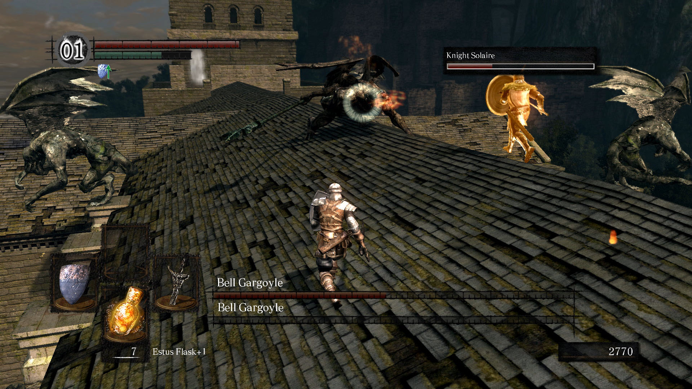

Dark Souls
Dark Souls, lançado pela FromSoftware em 2011, é um jogo de ação e RPG que rapidamente se tornou um ícone na indústria dos videogames. Conhecido por sua dificuldade implacável e design de jogo inovador, Dark Souls desafia os jogadores a superarem obstáculos aparentemente intransponíveis em um mundo sombrio e desolador. Este artigo irá explorar as principais características que tornaram Dark Souls um clássico cult e uma referência no gênero de jogos de ação e RPG.
História e Ambientação
Dark Souls é ambientado no reino fictício de Lordran, um mundo devastado por uma maldição conhecida como a "Marca Negra". Os jogadores assumem o papel de um morto-vivo que, guiado por uma profecia, busca trazer equilíbrio ao mundo ao acender as Chamas Primordiais. A narrativa do jogo é contada de maneira fragmentada, através de diálogos enigmáticos, descrições de itens e detalhes ambientais, incentivando os jogadores a mergulharem fundo no lore e a interpretarem a história por si mesmos.
Jogabilidade e Desafio
Uma das características mais notáveis de Dark Souls é a sua dificuldade. O jogo é famoso por não fornecer tutoriais extensivos nem segurar a mão do jogador. Em vez disso, desafia os jogadores a aprenderem com seus erros, recompensando a paciência, a estratégia e a habilidade. Os inimigos são implacáveis e os chefes são verdadeiras provas de perseverança e domínio dos controles do jogo. Cada morte é uma lição e cada vitória, uma conquista memorável.
Design de Níveis e Mundo Interconectado
O design dos níveis em Dark Souls é um dos seus aspectos mais aclamados. O mundo de Lordran é interconectado de maneira magistral, permitindo que os jogadores desbloqueiem atalhos e novas áreas que se ligam de formas surpreendentes. Esta interconectividade proporciona um senso de coesão e descoberta contínua, incentivando a exploração e a familiaridade com o ambiente.
Elementos de RPG
Dark Souls incorpora profundos elementos de RPG, permitindo aos jogadores personalizar seus personagens através de uma variedade de classes, equipamentos e habilidades. A escolha de armas, armaduras e magias pode alterar drasticamente a forma como o jogo é jogado, oferecendo uma rica experiência de personalização e replayability. A progressão do personagem é baseada na coleta de almas, que servem tanto como moeda quanto como pontos de experiência, tornando cada decisão de gasto significativa.
